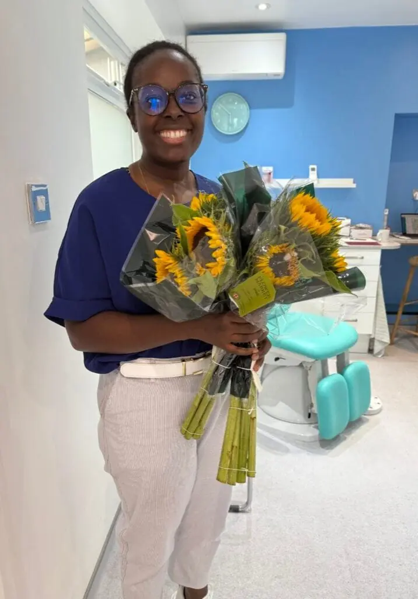

About Us
Welcome to kingstonfeet
At kingstonfeet you can be confident that both you and your feet will be treated with great care and attention to detail, in a comfortable, relaxing environment.
From your first contact we hope you will enjoy a friendly and caring service - we want you to get the appointment you need quickly, so you can get on with your life in comfort again.
Jo Lea
Hi, I’m Jo Lea,
I am passionate about restoring comfort to patients who have foot pain and feel a bit anxious about taking off their shoes to show someone else their feet! Having worked for over 10 years in an NHS hospital high risk diabetic foot clinic, you really can’t show me anything that will surprise me.
Over my 35+ years in Podiatry, I have seen an enormous variety of painful foot problems. I particularly enjoy treating verrucae using our new Swift microwave technology, restoring beautiful nails with medical toenail reconstruction for infected or damaged toenails or nail surgery as well as all aspects of routine podiatry and diabetic footcare - so long as you feel nurtured and comfortable at the end of your appointment.
When I’m not working I love to spend time with my family, walking in the local area (especially Richmond Park) with friends and their dogs, sitting around the dining table; eating and chatting with friends and travelling to far flung places to experience different food and cultures.
Josephine Ssemuyaba

Hi I’m Josephine,
I graduated with a degree in Podiatry in 2016, and for nearly a decade, I’ve been working within the NHS.
Over the years, I’ve treated a wide range of foot problems, and I feel confident in helping you with whatever podiatric issue you might be facing.People often ask me, “Why podiatry?” For me, it's one of the few areas in medicine where patients typically leave their appointment feeling noticeably better.
I love being able to ease someone’s pain or help them regain the ability to do something they were struggling with.
As an MSK podiatrist, I frequently treat injuries that prevent people from enjoying the activities they love—and I find it incredibly rewarding to support them in getting back to those things.
In my free time, I love singing and going to all kinds of music concerts—from orchestras to acappella performances. I also have a lively cocker spaniel named Jerry, who keeps me on my toes and makes sure I explore plenty of parks around South London.
Gloria Phillips
Hi, I’m Gloria
I joined the team as a Podiatrist in July 2023.
I have worked locally as a Podiatrist for over 30 years. I am Kingston born, bred and educated.
A good party especially if it involves a Margarita “on the rocks” is time well spent out of work – and my favourite food is homemade lasagne.
Moving clinics presents new challenges but so far I am enjoying the changes.
Working as part of the kingstonfeet team is great - it’s giving me the opportunity to learn more about wound care, various skin conditions and I am learning how best to treat fungal nails.
More than anything when in work I want to make people’s feet feel fantastic.
Andy Lea
Hi - I am Andy Lea,
I am married to Jo, kingstonfeet’s business owner. Working as Practice Manager, helping our growing practice move to the next stage - ideally relocating to new premises in North Kingston.
Just like my previous roles in airlines and airports, Podiatry is focussed on caring for people consistently and well. I enjoy introducing the latest technology but only when it helps our patients and our team.
Often I am planning travel somewhere, and am delighted when patients want to talk with about travel.
Trying out new recipes on friends and family is fun, especially when ingredients or techniques are a little different.
All our podiatrists are qualified in Podiatry, are HCPC registered and are members of the Royal College of Podiatry.
We have strong working relationships with local NHS and private Podiatric Surgeons, should a surgical opinion be required, as well as potential onward referrals for imaging, blood tests and therapeutic injections.